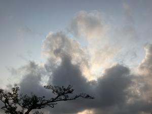
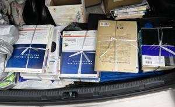
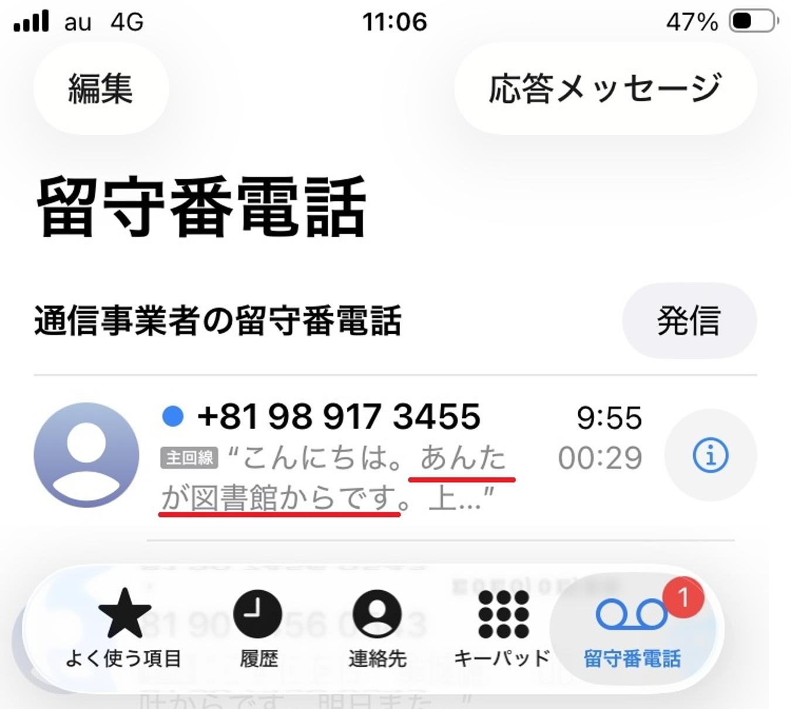

うるがいの話 ある日
最新: きのうの出来事【うるがいの話 ある日】とは 一日だけのプログです
『うるがいの話』の最新一日だけのプログで、通信料が少なく経済的だ。カニの画像をクリックすると全ての日付が載る『うるがいの話』サイトを表示します
|
|
【うるがいの話】 うるがい(ｳﾙｶﾞｲ urugai)とは、『もずくがに』の名前でとても大きくなります。 |
|---|---|
|
|
【カミマヤーの話】 猫のことを方言でマヤーといいます。カミマヤー（kamimayaa）とは、神の猫のことです。 |
|
【たながぁの音楽】 たながぁ（ﾀﾅｶﾞｰ tanagaa）とは手長えびのことで、何種類かあり大きいのは車 エビぐらいになります。 |

|
【ぶながぁの話】 ぶながぁ(ﾌﾞﾅｶﾞｰ bunagaa)とは、赤い髪の毛、赤い身体、そして身長は１ｍ２０ｃｍ ぐらい、川の蟹を食べているの目撃された。場所は沖縄県国頭郡大宜味村のと ある村僕の隣近所に住んでいる爺さんから、聞いた話です。 |
|
|
【ギーマの話】 ギーマ(giima)とは、山原の里山に咲くスズランに似た、 花を付けます。実は食べられます、 気が付くと口の周りが紫になっています。 |
2026年04月13日 (月）きのうの出来事
22:18

某３１歳
【謹告】二月二十一日の朝に別れたのが最後となり夜には捜索
願いも空しく翌日二十二日に帰らぬ人となりました。
お別れ式・葬儀は二月二十七日に執り行い七七忌の儀は初七日
の二月二十八日に四十九日と併せて相済ませました。
生前お世話になりました小中学校・高校・大学の友人並びに多
くの皆様方に厚く感謝申し上げ謹んでお知らせ致します。
新聞の謹告である、こんな謹告文みたことがない、家族はさぞ
かし辛かったでしょうと胸を痛める。
県立図書館へ本を借り、駐車場のカード紙を入れ、料金５０円
を支払うが、カード紙が出てこない！、仕方ないので５０円入
れる。またかい、２度目だぜ（恣意的な事を考えてしまう）。
県立図書館の帰り、長い間（２０年近く）購入していた専門の
雑誌を捨てる、退職してから一度もみていない、今後も読まな
いのだろう。

家に戻ると、留守番電話が、『あんたが』スゴイ！、自動翻訳
だと思うが、『あんた』受ける。県立図書館への返本の中に那
覇市の図書館の本が、一冊紛れて混んでいたとのこと。はぁ～
またか、仕方なく県立図書館へ行き、その一冊を取る。で、ま
た駐車場の料金５０円を支払う。

その後、内地へ行っていたコドモを飛行場へ向かい、アパート
で降ろす。降ろすとき、預けていた鍵は？、え！、あ、軽自動
だから・・、無い。なんと、普通乗用車で送ったので、預かっ
た鍵は、普通乗用車にいれたままだ。そして、疲れている私は
家にもどり、普通乗用車から預かったコドモの鍵をとり、アパ
ートへ届ける。子供が、帰って来ているので軽自動が家にある
のです。それが、チョンボの要因です。
そして、大きな要因はおとといのウィンドウズのアップデート
で、一部のプログサイトにＳＳＨ接続が、エラーとなりプログ
のアプデートで行えなくなった事が、平常心でなくなった。
最後にジョギングの帰りに、ファミリーマートに届いたアマゾ
ンの製品を取るつもりが、大声で怒鳴り散らす人達がいた。嫌
な気持ちなった、そのせいか荷物を取ることを失念しておりま
した。マ、今日とるけど
三田村邦彦「救世主が現れないかぁ」 米イラク戦争の緊張下
でポツリ…必殺仕事人に期待する声が続々
ん、わたしもそう思う